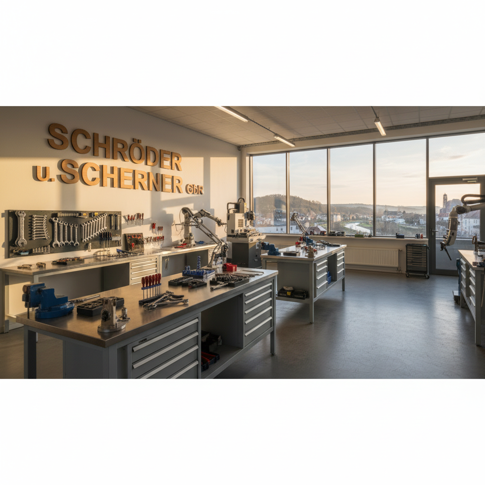

Von zwei Meistern zu einem starken Team.
Die Geschichte von Schröder u. Scherner begann am 1. März 1993. In Weißenfels gründeten die beiden Meister im Sanitär- und Heizungsbau, Thomas Schröder und Uwe Scherner, eine Gesellschaft bürgerlichen Rechts mit einer klaren Vision: Sie wollten erstklassiges Handwerk mit persönlichem Service und absoluter Zuverlässigkeit verbinden.
Von Anfang an lag der Fokus auf Qualität. Statt auf schnelles Wachstum setzten die Gründer auf nachhaltige Kundenbeziehungen und eine Arbeit, die für sich selbst spricht. Diese Philosophie hat sich bewährt. Über die Jahre wuchs das Unternehmen stetig und wurde zu einer festen Größe für private Haushalte und Gewerbekunden im gesamten Burgenlandkreis.
